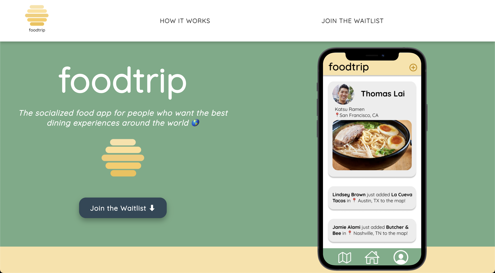
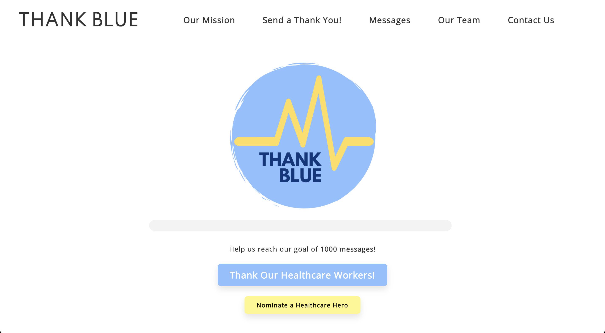
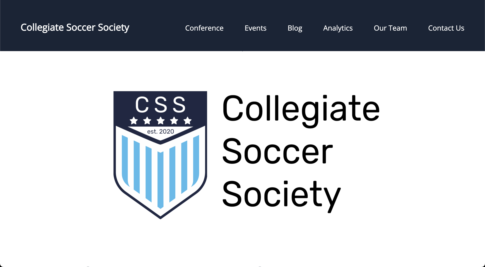
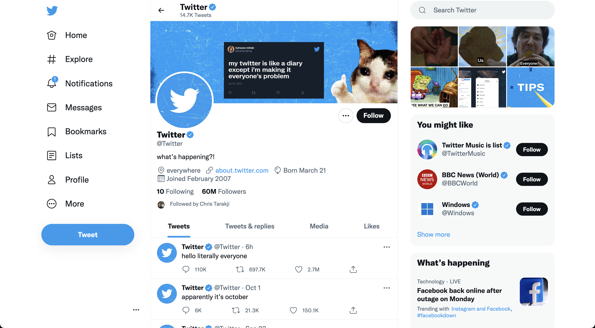
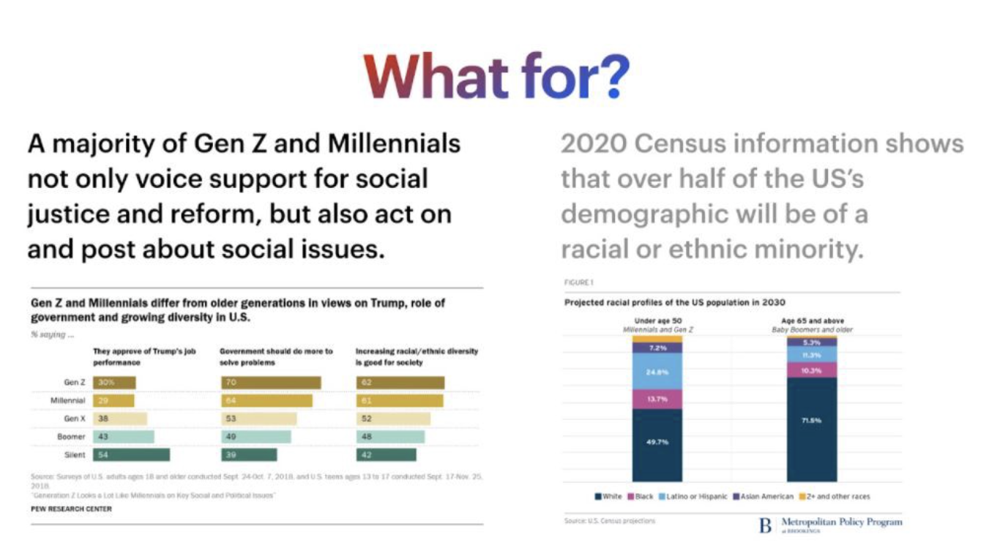
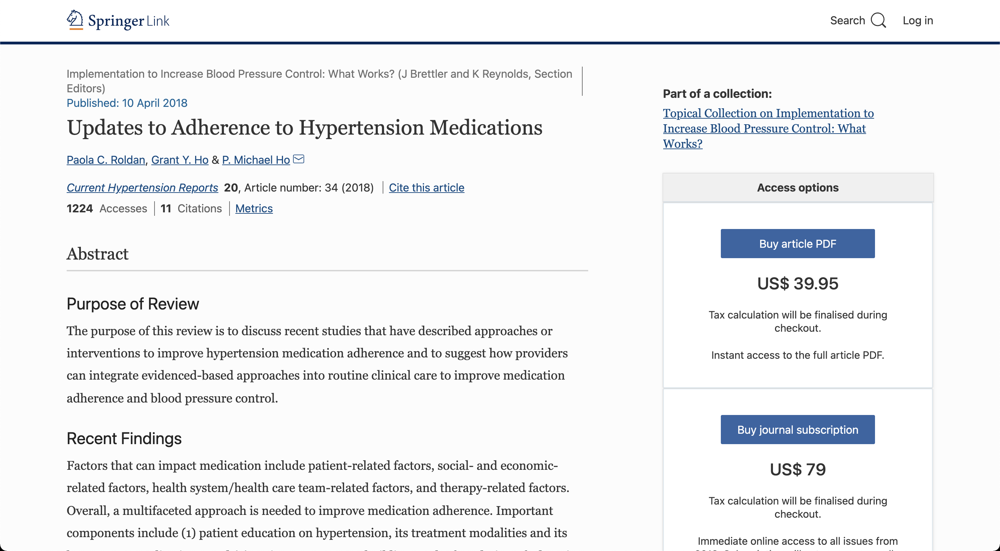
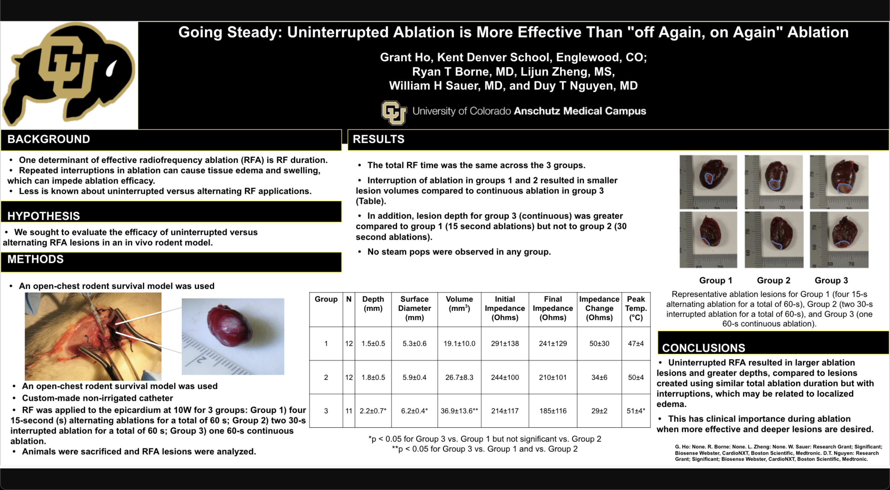

Grant Ho | Projects
Skip to Main Content
projects
Foodtrip

Foodtrip is a socialized food app for people who want the best dining experiences around the world.
learn more
Thank Blue

Thank Blue is a student-led initiative to thank the heroics of the University of Michigan healthcare workers during the pandemic.
discover more
Collegiate Soccer Society

CSS is an organization for soccer lovers to play pick-up & FIFA and to discuss topics ranging from data-analytics and business.
visit website
Detecting Fake News with Machine Learning

Developed model to decipher fake versus true news from scraped data via Twitter and other news sources.
read more
Plant Jammer
A web-based widget to integrate on grocery store websites promoting sustainable eating and food waste elimination.
view project
Glassroots

A social media concept that fosters a safe environment for political discourse.
read more
Hypertension Adherence Medication Research

Research to suggest how providers can integrate evidenced-based approaches into routine clinical care to improve medication adherence and blood pressure control.
read more
American Heart Association

Poster presentation titled Continuity Matters: Uninterrupted Ablation is More Effective Than "Off and On" Ablation at the 2018 American Heart Association Conference.
learn more